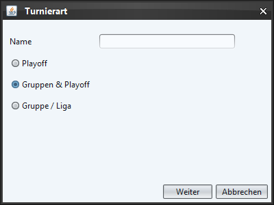
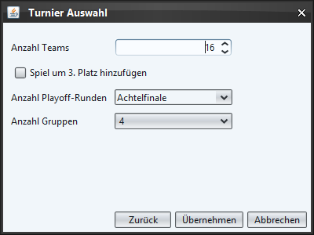

Im ersten Fenster kann der Turniername gesetzt und eine der 3 Turnierarten gewählt werden.

Abhängig von der Auswahl im letzten Fenster kann dieses Fenster etwas anders aussehen. Neben der Anzahl Teams welche am Turnier teilnehemen können, lässt sich auch einstellen, ob es ein Spiel um den 3. Platz geben soll (Spiel zwischen den Verlierern der beiden Halbfinale).